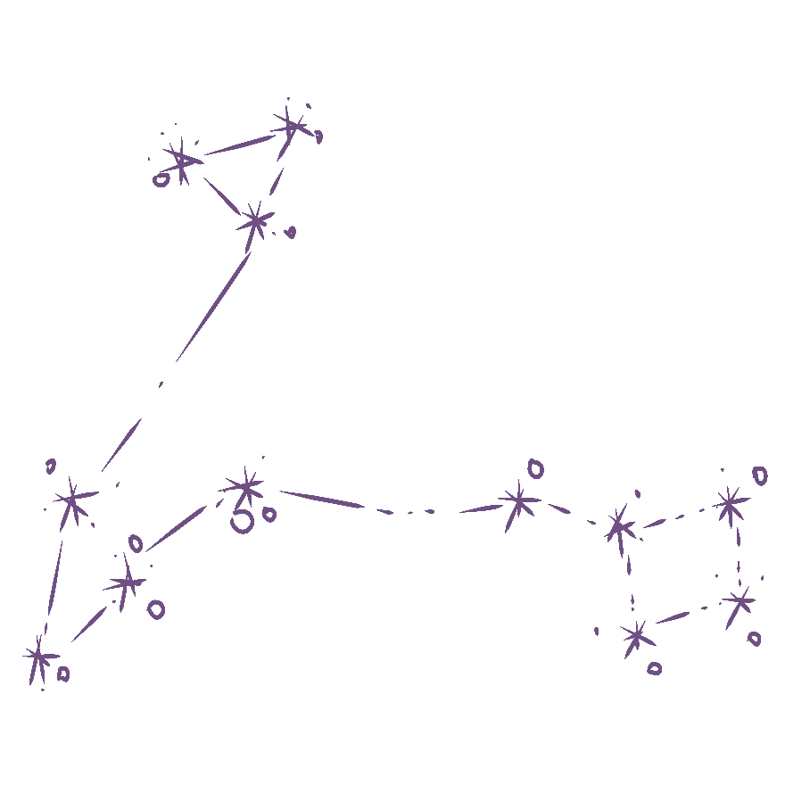
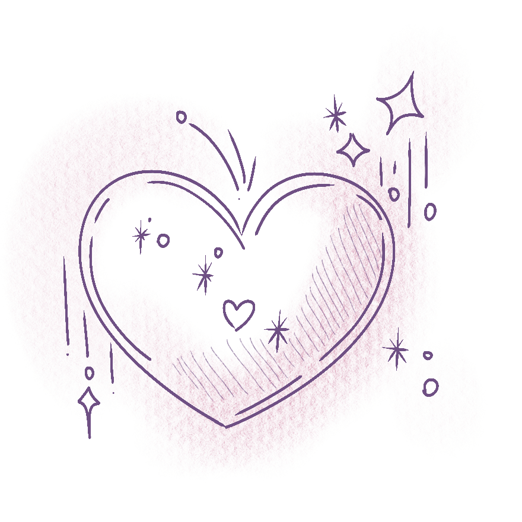
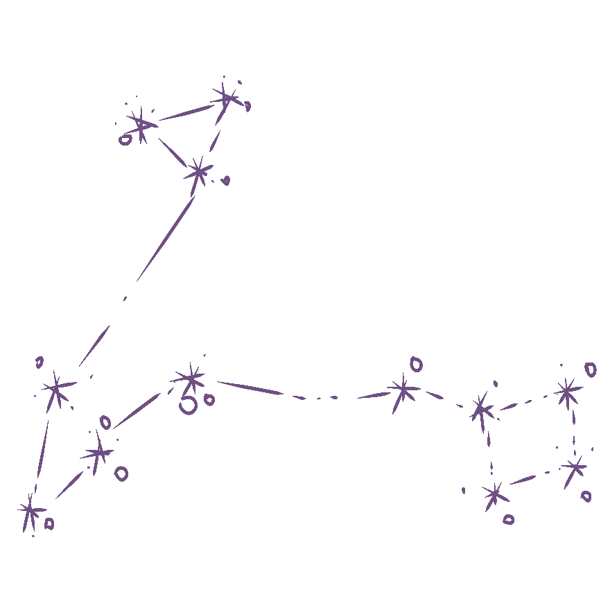
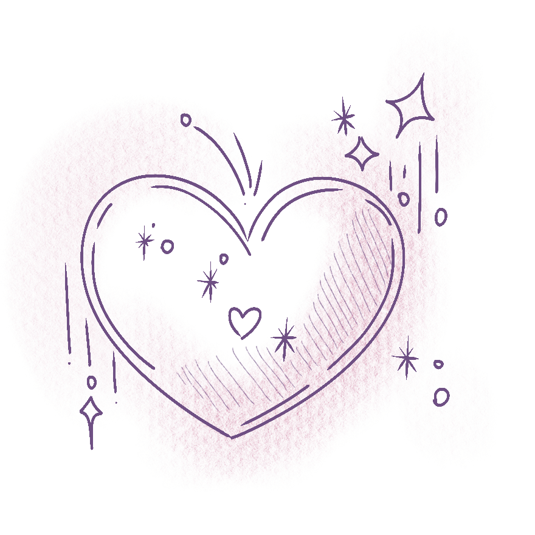

초기 형태의 놀이용 카드가 4세기경 아시아와 중동 지역에서
등장했다고 알려져 있습니다. 이 카드들은 무역로를 통해 유럽으로
전파되었고, 당시에는 오늘날 우리가 아는 타로카드와는 다른 단순한
게임용 카드였습니다.
타로카드는 단순한 놀이용 도구를 넘어 점술과 신비주의의 영역으로 확장되었습니다. 특히 프랑스에서 학자들과 신비주의자들이 카드의 심볼에 영적인 의미를 부여하기 시작했습니다. 대표적으로 프랑스 작가 앙투안 쿠르 드 제블랭(Antoine Court de Gébelin)은 타로를 고대 이집트의 신비한 지혜와 연결 지으며 타로 점술의 토대를 마련했습니다.
타로카드는 대중화의 전환점을 맞이했습니다. 1909년,
신비주의자인 아서 에드워드 웨이트(Arthur Edward Waite)와 예술가
파멜라 콜먼 스미스(Pamela Colman Smith)가 협력해 만든
라이더-웨이트-스미스 덱은 타로 역사에서 가장 상징적이고 대중적인
덱으로 자리 잡았습니다. 이 덱은 세부적인 그림과 풍부한
상징성으로 누구나 쉽게 타로를 이해하고 활용할 수 있게 했습니다.
현대에 들어 타로카드는 더욱 다양한 모습으로 진화했습니다.
수많은 아티스트와 디자이너들이 현대적이고 포괄적인 테마를 담은
독창적인 타로 덱을 제작하며, 타로의 예술적 가능성을
확장했습니다. 또한 디지털 기술의 발달로 인해 온라인 타로 리딩이
가능해졌고, 언제 어디서나 타로를 접할 수 있는 환경이
조성되었습니다.
유니콘은 신비로운 존재로 순수한 영혼과 마법의 가능성을
나타냅니다. 특히 무한한 희망과 치유의 에너지를 상징합니다.
타로에서 등장한다면, 기적적인 해결이나 마법 같은 순간을 예고하며
긍정적 변화를 상징합니다.
고양이는 직관과 영적인 통찰력의 상징입니다. 감춰진 진실이나 비밀을
암시하며, 무의식의 세계와 연결됩니다.
타로와 관련해서 고양이는 "자유롭고 신중한 선택" 또는 숨은
위험을 나타내기도 합니다.
타로에서 천사는 균형, 평화, 치유를 상징하는 경우가
많습니다. 예를 들어, "절제 (Temperance)" 카드에는 천사가
등장해 균형과 조화를 강조합니다.
천사는 또한 "카르마"나 영적인 성장의 메시지를 전달하기도
합니다.


열정, 창의성, 행동, 영적 에너지.
물질적 성공, 재정, 건강, 현실적 문제.
감정, 관계, 사랑, 영적 연결.


각 수트는 1번(에이스)부터 10번까지의 숫자 카드와 4장의 궁정 카드(페이지, 나이트, 퀸, 킹)로 이루어집니다.
마이너 아르카나는 56장의 카드로 구성되며, 일상생활에서의 감정, 행동, 관계, 그리고 실질적인 문제들을 다룹니다.

메이저 아르카나는 총 22장의 카드로 구성되어 있으며, 인생의 중요한 전환점, 도전, 또는 깊은 영적 여정을 상징합니다. 각 카드는 독립적인 주제를 다루며, 운명과 관련된 메시지를 전달합니다.
타로카드 시장의 주요 소비자층은 북미와 유럽이 주를 이루며,
아시아에서는 점차 관심이 늘고 있는 추세입니다. 타로카드는 명상이나
자기 성찰 도구로 사용되며, 특히 한국과 일본에서는 온라인 기반
서비스와 소셜 미디어의 영향을 받으며 인기를 얻고 있습니다.
타로카드 시장은 2023년에 약 12억 9,200만 달러 규모로 평가되었으며,
2030년까지 연평균 3.51%의 성장률로 15억 8,900만 달러에 이를 것으로
예상됩니다. 이는 영성과 자기성찰에 대한 관심 증가와 온라인 플랫폼의
확장이 주요 원인으로 꼽힙니다.

 


